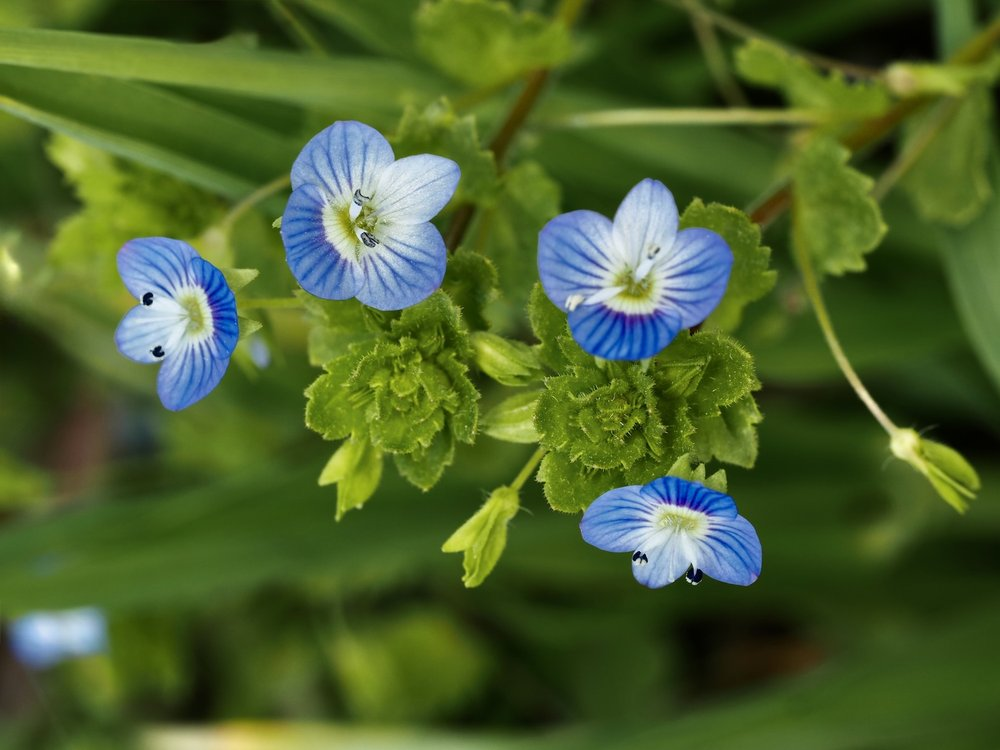

Persischer Ehrenpreis


Blau wie der Himmel über Persien
Der Persische Ehrenpreis wurde um 1800 aus dem Nahen Osten nach Europa gebracht, vermutlich mit Getreidesamen. Binnen weniger Jahrzehnte hatte er sich über ganz Mitteleuropa ausgebreitet – ein Paradebeispiel für einen erfolgreichen Neophyten. Seine himmelblau leuchtenden Winzigblüten machen ihn zu einem der auffälligsten Ackerwildkräuter des Frühjahrs, auch wenn kaum jemand seinen Namen kennt.
Vier Blütenblätter im Himmelsblau
Die Blüten des Persischen Ehrenpreises folgen dem klassischen Ehrenpreis-Bauplan: vier Blütenblätter, das unterste kleiner und blasser als die anderen drei. Aus der Nähe ist jede Blüte ein kleines Kunstwerk – mit dunklen Adern auf hellblauem Grund. Dass so viele Menschen an diesen Blüten täglich vorbeigehen, ohne sie zu bemerken, ist einer der übersehenen Schönheitsverluste des Alltags.